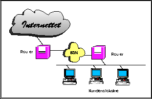

I den senere tid har det kommet løsninger som gjør det mulig å route TCP/IP over ISDN samband. Konfigurasjonene her minner om et oppringt samband, men det er ikke analoge modem i hver ende. I kundens ende vil det kunne være en PC eller arbeidsstasjon med ISDN terminaladapter eller et ISDN kort - evt. en ruter med en ISDN linje inn og f.eks. et vanlig lokalnett basert på Token Ring el. Ethernet i andre enden. I tilbyderenden ser det mer eller mindre ut som ved et fast samband, siden det vanligvis her vil stå en ruter med et ISDN kort.
Et ISDN samband vil gi hastigheter fra 64 kbps og oppover, og vil kunne være et meget prisgunstig alternativ til et fast samband for de som ønsker høy båndbredde, men ikke er avhengig av 24 timers tilgang. En annen fordel med ISDN sambandet, er at det kan brukes til andre ting - f.eks. telefontjenester samt videokonferanser etc.